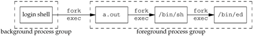

10.18. system FunctionIn Section 8.13, we showed an implementation of the system function. That version, however, did not do any signal handling. POSIX.1 requires that system ignore SIGINT and SIGQUIT and block SIGCHLD. Before showing a version that correctly handles these signals, let's see why we need to worry about signal handling. ExampleThe program shown in Figure 10.26 uses the version of system from Section 8.13 to invoke the ed(1) editor. (This editor has been part of UNIX systems for a long time. We use it here because it is an interactive program that catches the interrupt and quit signals. If we invoke ed from a shell and type the interrupt character, it catches the interrupt signal and prints a question mark. The ed program also sets the disposition of the quit signal so that it is ignored.) The program in Figure 10.26 catches both SIGINT and SIGCHLD. If we invoke the program, we get
$ ./a.out
a append text to the editor's buffer
Here is one line of text
. period on a line by itself stops append mode
1,$p print first through last lines of buffer to see what's there
Here is one line of text
w temp.foo write the buffer to a file
25 editor says it wrote 25 bytes
q and leave the editor
caught SIGCHLD
When the editor terminates, the system sends the SIGCHLD signal to the parent (the a.out process). We catch it and return from the signal handler. But if it is catching the SIGCHLD signal, the parent should be doing so because it has created its own children, so that it knows when its children have terminated. The delivery of this signal in the parent should be blocked while the system function is executing. Indeed, this is what POSIX.1 specifies. Otherwise, when the child created by system terminates, it would fool the caller of system into thinking that one of its own children terminated. The caller would then use one of the wait functions to get the termination status of the child, thus preventing the system function from being able to obtain the child's termination status for its return value. If we run the program again, this time sending the editor an interrupt signal, we get
$ ./a.out
a append text to the editor's buffer
hello, world
. period on a line by itself stops append mode
1,$p print first through last lines to see what's there
hello, world
w temp.foo write the buffer to a file
13 editor says it wrote 13 bytes
^? type the interrupt character
? editor catches signal, prints question mark
caught SIGINT and so does the parent process
q leave editor
caught SIGCHLD
Recall from Section 9.6 that typing the interrupt character causes the interrupt signal to be sent to all the processes in the foreground process group. Figure 10.27 shows the arrangement of the processes when the editor is running. In this example, SIGINT is sent to all three foreground processes. (The shell ignores it.) As we can see from the output, both the a.out process and the editor catch the signal. But when we're running another program with the system function, we shouldn't have both the parent and the child catching the two terminal-generated signals: interrupt and quit. These two signals should really be sent to the program that is running: the child. Since the command that is executed by system can be an interactive command (as is the ed program in this example) and since the caller of system gives up control while the program executes, waiting for it to finish, the caller of system should not be receiving these two terminal-generated signals. This is why POSIX.1 specifies that the system function should ignore these two signals while waiting for the command to complete. Figure 10.26. Using system to invoke the ed editor
#include "apue.h"
static void
sig_int(int signo)
{
printf("caught SIGINT\n");
}
static void
sig_chld(int signo)
{
printf("caught SIGCHLD\n");
}
int
main(void)
{
if (signal(SIGINT, sig_int) == SIG_ERR)
err_sys("signal(SIGINT) error");
if (signal(SIGCHLD, sig_chld) == SIG_ERR)
err_sys("signal(SIGCHLD) error");
if (system("/bin/ed") < 0)
err_sys("system() error");
exit(0);
}
Figure 10.27. Foreground and background process groups for Figure 10.26ExampleFigure 10.28 shows an implementation of the system function with the required signal handling. If we link the program in Figure 10.26 with this implementation of the system function, the resulting binary differs from the last (flawed) one in the following ways.
Many older texts show the ignoring of the interrupt and quit signals as follows:
if ((pid = fork()) < 0) {
err_sys("fork error");
} else if (pid == 0) {
/* child */
execl(...);
_exit(127);
}
/* parent */
old_intr = signal(SIGINT, SIG_IGN);
old_quit = signal(SIGQUIT, SIG_IGN);
waitpid(pid, &status, 0)
signal(SIGINT, old_intr);
signal(SIGQUIT, old_quit);
The problem with this sequence of code is that we have no guarantee after the fork whether the parent or child runs first. If the child runs first and the parent doesn't run for some time after, it's possible for an interrupt signal to be generated before the parent is able to change its disposition to be ignored. For this reason, in Figure 10.28, we change the disposition of the signals before the fork. Note that we have to reset the dispositions of these two signals in the child before the call to execl. This allows execl to change their dispositions to the default, based on the caller's dispositions, as we described in Section 8.10. Figure 10.28. Correct POSIX.1 implementation of system function
#include <sys/wait.h>
#include <errno.h>
#include <signal.h>
#include <unistd.h>
int
system(const char *cmdstring) /* with appropriate signal handling */
{
pid_t pid;
int status;
struct sigaction ignore, saveintr, savequit;
sigset_t chldmask, savemask;
if (cmdstring == NULL)
return(1); /* always a command processor with UNIX */
ignore.sa_handler = SIG_IGN; /* ignore SIGINT and SIGQUIT */
sigemptyset(&ignore.sa_mask);
ignore.sa_flags = 0;
if (sigaction(SIGINT, &ignore, &saveintr) < 0)
return(-1);
if (sigaction(SIGQUIT, &ignore, &savequit) < 0)
return(-1);
sigemptyset(&chldmask); /* now block SIGCHLD */
sigaddset(&chldmask, SIGCHLD);
if (sigprocmask(SIG_BLOCK, &chldmask, &savemask) < 0)
return(-1);
if ((pid = fork()) < 0) {
status = -1; /* probably out of processes */
} else if (pid == 0) { /* child */
/* restore previous signal actions & reset signal mask */
sigaction(SIGINT, &saveintr, NULL);
sigaction(SIGQUIT, &savequit, NULL);
sigprocmask(SIG_SETMASK, &savemask, NULL);
execl("/bin/sh", "sh", "-c", cmdstring, (char *)0);
_exit(127); /* exec error */
} else { /* parent */
while (waitpid(pid, &status, 0) < 0)
if (errno != EINTR) {
status = -1; /* error other than EINTR from waitpid() */
break;
}
}
/* restore previous signal actions & reset signal mask */
if (sigaction(SIGINT, &saveintr, NULL) < 0)
return(-1);
if (sigaction(SIGQUIT, &savequit, NULL) < 0)
return(-1);
if (sigprocmask(SIG_SETMASK, &savemask, NULL) < 0)
return(-1);
return(status);
}
Return Value from systemBeware of the return value from system. It is the termination status of the shell, which isn't always the termination status of the command string. We saw some examples in Figure 8.23, and the results were as we expected: if we execute a simple command, such as date, the termination status is 0. Executing the shell command exit 44 gave us a termination status of 44. What happens with signals? Let's run the program in Figure 8.24 and send some signals to the command that's executing: $ tsys "sleep 30" ^?normal termination, exit status = 130 we type the interrupt key $ tsys "sleep 30" ^\sh: 946 Quit we type the quit key normal termination, exit status = 131 When we terminate the sleep with the interrupt signal, the pr_exit function (Figure 8.5) thinks that it terminated normally. The same thing happens when we kill the sleep with the quit key. What is happening here is that the Bourne shell has a poorly documented feature that its termination status is 128 plus the signal number, when the command it was executing is terminated by a signal. We can see this with the shell interactively. $ sh make sure we're running the Bourne shell $ sh -c "sleep 30" ^? type the interrupt key $ echo $? print termination status of last command 130 $ sh -c "sleep 30" ^\sh: 962 Quit - core dumped type the quit key $ echo $? print termination status of last command 131 $ exit leave Bourne shell On the system being used, SIGINT has a value of 2 and SIGQUIT has a value of 3, giving us the shell's termination statuses of 130 and 131. Let's try a similar example, but this time we'll send a signal directly to the shell and see what gets returned by system:
$ tsys "sleep 30" & start it in background this time
9257
$ ps -f look at the process IDs
UID PID PPID TTY TIME CMD
sar 9260 949 pts/5 0:00 ps -f
sar 9258 9257 pts/5 0:00 sh -c sleep 60
sar 949 947 pts/5 0:01 /bin/sh
sar 9257 949 pts/5 0:00 tsys sleep 60
sar 9259 9258 pts/5 0:00 sleep 60
$ kill -KILL 9258 kill the shell itself
abnormal termination, signal number = 9
Here, we can see that the return value from system reports an abnormal termination only when the shell itself abnormally terminates. When writing programs that use the system function, be sure to interpret the return value correctly. If you call fork, exec, and wait yourself, the termination status is not the same as if you call system. |